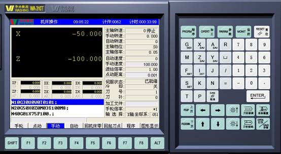
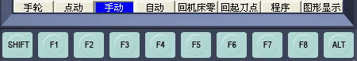

主功能键盘区包括、
：监测系统当前状态，用于诊断显示系统坐标、输入输出口等状态信息。
注：在U盘及串口接入区有一个硬件复位按钮，当您的系统出现异常时，可用此按钮进行复位。
| WA310T数控系统操作 |

铣床面板
主功能键盘区
主功能键盘区包括、 、、
、、 、五个键，用于选择系统的五大主功能：
、五个键，用于选择系统的五大主功能：
 ：用户加工程序管理，用于创建、修改、保存以及输入输出用户加工代码等操作；
：用户加工程序管理，用于创建、修改、保存以及输入输出用户加工代码等操作；
 ：机床操作，实现对机床的各种操作功能；
：机床操作，实现对机床的各种操作功能；
 ：参数设置，用于设置各种与机床、数控系统以及驱动器有关的参数；
：参数设置，用于设置各种与机床、数控系统以及驱动器有关的参数；
：监测系统当前状态，用于诊断显示系统坐标、输入输出口等状态信息。
 ：软复位。取消当前正在执行的操作，关冷却液，主轴以及刀具输出信号
：软复位。取消当前正在执行的操作，关冷却液，主轴以及刀具输出信号
注：在U盘及串口接入区有一个硬件复位按钮，当您的系统出现异常时，可用此按钮进行复位。
位于液晶屏的下方,实现在各主功能界面下选择相应子功能的操作, 子功能键盘区也称F功能键盘区，为表述一致，我们以F功能键盘区代替子功能键盘区，F功能键代替子功能键来表达。
F功能键共有10个，分别为 、、、、、 、、以及和
、、以及和 键。F1～F8功能键所代表的功能随选择的主功能不同而变化，其功能对应于显示界面中按钮菜单的功能，用于在主功能界面下选择相应的子功能。
键。F1～F8功能键所代表的功能随选择的主功能不同而变化，其功能对应于显示界面中按钮菜单的功能，用于在主功能界面下选择相应的子功能。 键 和键用于F功能键的扩展。
键 和键用于F功能键的扩展。
编辑键盘区
提供编辑加工代码以及设置修改各种参数值所需的按键，编辑键包括：
G M F Ｓ Ｔ X Y Z A I K Ｐ Ｊ Ｌ N Ｒ / 字母键
0 1 2 3 ４ 5 ６ ７ ８ 9 数字键
空格键 ― 负号键 . 小数点键 ＝ 等号键
编辑键中一些键为功能复用键，系统根据当前状态进行复用。比如在程序编辑状态下，“G”键的功能是在当前光标处显示出“G”字符，而在操作加工主界面下，“G”键的功能是进入MDI方式，而并不显示“G”字符。
：CAN，清除报警栏的错误信息
：回车键，在文件编辑界面下产生新行，在其他状态下表示当前输入结束
 ：翻页键，对程序名列表、程序内容或参数显示等界面进行上一页面或下一页面内容显示。
：翻页键，对程序名列表、程序内容或参数显示等界面进行上一页面或下一页面内容显示。
：上、下、左、右方向键
：调节液晶显示屏的亮度
：快速进入刀补修调操作
：坐标偏置。编程坐标系(工件坐标系)和机床坐标系同时偏置
：快速进入刀补操作，参数修改时进入密码输入
 ：当系统处于程序管理或参数管理主功能界面时，按此键表示保存当前程序、系统参数、刀具参数、机床参数等文件。当系统处于加工状态时，按此键表示调用用户程序，当前界面弹出程序名列表和程序名输入框，在程序名输入框输入程序名并按回车，表示调用该程序。
：当系统处于程序管理或参数管理主功能界面时，按此键表示保存当前程序、系统参数、刀具参数、机床参数等文件。当系统处于加工状态时，按此键表示调用用户程序，当前界面弹出程序名列表和程序名输入框，在程序名输入框输入程序名并按回车，表示调用该程序。
具有复用功能的键包括：
：X Save,保存当前编程坐标系X轴数值，作测定刀具补偿值参数
：Y Save,保存当前编程坐标系Y轴数值，作测定刀具补偿值参数
：Z Save,保存当前编程坐标系Z轴数值，作测定刀具补偿值参数
：A Save,保存当前编程坐标系A轴数值，作测定刀具补偿值参数
：F Set，手动设置进给速度
：S Set，手动设置主轴转速
：G MDI， 在文件编辑或字符输入状态下，表示输入显示“G“字符，在主功能界面下，表示进入MDI方式输入状态
机床操作主功能下，系统提供的子功能包括手动连续进给(简称手动)、点动增量进给(简称点动)、手轮连续进给(简称手轮)、自动循环加工、DNC方式、MDI方式、回零操作、偏置功能、M功能面板操作。
手动连续进给
是指在手动模式下按住手动操作机床功能键盘区的八个手动进给键中任意一个，机床沿相应轴方向连续移动，弹起时停止运动的一种用户控制方式。
点动增量进给
是指在点动模式下按一次手动操作机床功能键盘区的八个手动进给键中任意一个，机床沿相应轴方向移动一个固定的距离。点动增量进给可用于短距离移动机床，进行精定位。
手轮连续进给
是指在手轮模式下，旋转操作面板上的手摇脉冲发生器，机床沿相应轴方向移动一定的距离。运动轴的移动速度与旋转手轮快慢以及手轮倍率值大小有关。
自动循环加工
是指在自动模式下，系统根据用户编写的加工程序，按照程序代码流程执行相应的加工操作。
DNC方式
是指在自动模式下，系统执行U盘或串口动态输入的加工程序，与自动循环加工相比较来说，DNC方式加工的文件并未存入系统中，因此文件大小没有限制。对于文件字节数大于52K的程序，需要通过DNC方式才能加工起来。
MDI方式
指在字符显示模式下，按键，弹出MDI输入框，在此框中用户可输入一段加工代码，按 键后系统执行刚才输入加工代码。该段程序不需要输入程序段号。
键后系统执行刚才输入加工代码。该段程序不需要输入程序段号。
MDI方式便于用户快捷的输入并执行一段程序，而不必用编写并调用加工文件的方式实现机床控制。在自动方式下的可执行程序段均可在MDI方式下运行。
M功能面板操作
指通过系统提供的面板按键快捷的进行M功能操作。
M功能面板操作包括循环、冷却液开/关操作以及主轴状态设定
1、冷却液开/关操作指直接按手动操作机床功能键盘区的键，系统打开或者关闭冷却液的操作。
2、铣床主轴定义，通常情况下使安装刀具的轴以指定的速度正向或反向旋转的轴规定为主轴。
：按此键时系统使主轴正转继电器吸合，从而控制主轴顺时针方向旋转
：按此键时系统使主轴反转继电器吸合，从而控制主轴逆时针方向旋转
：按此键时系统断开主轴正反转继电器，使主轴电机断电，从而停止旋转
：按此键时系统使主轴正转继电器吸合，主轴顺时针旋转；键一旦松开就关主轴
机床坐标手动移动
手动方式(手动连续进给)
按(手动)键进入手动方式，在手动方式下，按八个手动进给键中任意一个，对应的坐标轴便沿相应的方向运动。其进给速度可按 手工设定。默认值为100mm/min。
手工设定。默认值为100mm/min。
实际手动进给速度 = 手动进给速度设定值×进给倍率
修改手动进给速度设定值：
按键，设定值在100、600、1500三个值间循环切换，松开选取之一；
按Fset键在‘手动速度’后出现光标，此后可输入数字，该值表示每分钟进给的毫米数，再按 键。该速度的范围在1～6000mm/min(0.001mm 脉冲当量时)之间，若输入有误，系统自动设定为12.000mm/min。按错数字，可用←键修改。
键。该速度的范围在1～6000mm/min(0.001mm 脉冲当量时)之间，若输入有误，系统自动设定为12.000mm/min。按错数字，可用←键修改。
手动进给速度可用进给倍率拨码开关动态调节。
手动连续进给的操作步骤
1、设定手动进给速度F；
2、拨动进给倍率拨码开关调节进给倍率；
3、按手动进给键，机床沿相应的轴方向移动，连续按住手动进给键则该轴一直进给运行，按键弹起则停止该轴的进给。
手动快速移动：当任一手动进给键与 (加速)键同时按下时，以快速移动速度(10号系统参数的值)运动机床，而忽略手动进给速度设定值。此功能称为手动快速移动，10号系统参数的值也称为快速移动速度。(加速)键可以通过参数设定为模态和非模态。
(点动连续进给)
与手动方式一样，按 (点动)键进入点动方式，每按一次坐标进给键，其坐标便沿该键对应的方向移动一个给定的长度，该长度由键设定，按 键在‘点动距离’后出现光标，此处可输入４个数字，按键。默认值为0.001mm。有效范围为0.001mm～65.500mm。
键在‘点动距离’后出现光标，此处可输入４个数字，按键。默认值为0.001mm。有效范围为0.001mm～65.500mm。
点动增量进给的操作步骤
1、设定点动增量值：按 键后，直接输入要修改的数值，再按键；
键后，直接输入要修改的数值，再按键；
2、按手动进给键，机床沿相应的轴方向移动。每按一次就移动一个增量值。
手轮方式(手轮连续进给)
310M/Mi控制系统，手轮可以控制机床在四个轴八个方向上的直线运动，按 键在X、Y、Z、A四个方向随时切换所选运动轴，为适应不同的需要，手轮设置了四个速度档位(倍率)，分别为×1、×10、×100，速度档之间可按键随时切换，最小控制精度等同于系统控制精度(0.001mm)，最大控制速度是脉冲当量的100倍。
键在X、Y、Z、A四个方向随时切换所选运动轴，为适应不同的需要，手轮设置了四个速度档位(倍率)，分别为×1、×10、×100，速度档之间可按键随时切换，最小控制精度等同于系统控制精度(0.001mm)，最大控制速度是脉冲当量的100倍。
按 (手轮)键进入手轮方式。
手轮进给的操作步骤
1、按 键，会在X轴、Y轴、Z轴、A轴间来回切换。选择一个机床运动轴；
键，会在X轴、Y轴、Z轴、A轴间来回切换。选择一个机床运动轴；
2、按 键，设定手轮移动的倍率；
键，设定手轮移动的倍率；
3、旋转手轮，机床沿相应的轴方向移动。
主轴与冷却
在手动、点动、手轮方式下，主轴和冷却均可手动操作。
主轴状态由、、 、
、 四个按键控制。
四个按键控制。 键设定主轴转速，系统输出该转速对应的模拟量。该转速由3号、4号系统参数设定上限。
键设定主轴转速，系统输出该转速对应的模拟量。该转速由3号、4号系统参数设定上限。
按 键设定冷却状态。
键设定冷却状态。
自动循环
对应机床的自动操作方式，按 (自动)键进入自动方式，此时F功能键按钮变成如下所示：

打开程序
进入自动方式后用户需通过按键通知系统准备运行的程序名。
用户程序列表里分两栏排序显示了电子盘里已有的程序以及各个程序的属性、长度等信息。若两栏排满了，还可按或键翻页显示未列出的程序。
在“加工文件”区出现光标并且闪烁，用户可在此处键入用户准备运行的程序名，←键用于修改程序名输入时按错的字符。
程序名输入无误后按 键，系统恢复到进来时的界面，说明系统已准备运行该程序。
键，系统恢复到进来时的界面，说明系统已准备运行该程序。
注：1. 若系统不存在以此程序名命名的文件，在电子盘里建立此文件后才能按 键启动自动循环，否则系统会报29#错误。
键启动自动循环，否则系统会报29#错误。
2. 关机时系统自动保护加工文件名，因此重新开机后若执行同一程序，不必进行打开程序的操作。
启动自动循环
在“加工文件”信息区有有效的文件名后，按 键，该程序开始运行。
键，该程序开始运行。
任意段号处启动加工
在按 键启动自动循环前，可设置起始段号使系统在任意段号处启动加工：按 (起始段号)键，在程序名后会出现闪烁光标，用户可在此处键入起始段号(如N0110)，按键。
键启动自动循环前，可设置起始段号使系统在任意段号处启动加工：按 (起始段号)键，在程序名后会出现闪烁光标，用户可在此处键入起始段号(如N0110)，按键。
做了指定起始段号的操作，再按键时系统从程序的指定段号处进行跳转加工，指定段号前的程序段不执行。
设置的起始段号仅一次有效，即设置好起始段号后，如果启动了循环加工，则下一次如要从相同的段号处执行跳转加工，必须在启动自动循环前再设置起始段号。
自动循环的状态设置
在自动循环子功能下，有两种与机床-数控系统有关的状态设置。
单段
按 键来回切换。按钮按下时为有效，这时系统每执行完一个程序段，便停下来等待启动信号，每按一次
键来回切换。按钮按下时为有效，这时系统每执行完一个程序段，便停下来等待启动信号，每按一次 键，系统向下执行一个程序段。
键，系统向下执行一个程序段。
若在等待启动信号时按下 键，则本次循环被取消，且不能再恢复。
键，则本次循环被取消，且不能再恢复。
暂停
与 对应，自动循环可由键暂停加工。在暂停后按
对应，自动循环可由键暂停加工。在暂停后按 键继续运行，若按键，则本次循环被取消。
键继续运行，若按键，则本次循环被取消。
执行自行循环加工的一般步骤
1.拨动进给倍率拨码开关和主轴倍率拨码开关，都置到1.0档位；
2.若要重新设定待加工程序名，否则跳过此步；
3.若要从任意段号处跳转加工，执行相关操作，否则跳过此步；
4.若要单段运行自动循环，执行相关操作，否则跳过此步；
5.若要改变模拟、联机运行状态，执行相关操作，否则跳过此步；
6.启动自动循环，执行相关操作；
7.在循环加工过程中，可按循环暂停键使系统进行暂停运行，即进给保持；也可拨动进给倍率拨码开关调整进给速度，或者拨动主轴倍率拨码开关调整主轴转速。